Selk drawings
Reference and transformation
Two RADIOSOL images informed the independent composition of the Selk scenes. Each depicts a different colony state and date.
Scale and surface
The Selk facility is extensive and integrated. It spreads across dusty terrain and partly beneath it.
Drawings

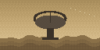
UplinkOpen SVG drawing
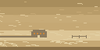
StormOpen SVG drawing
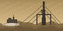
MAST-01Open SVG drawing
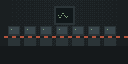
LabOpen SVG drawing Reactor hallOpen SVG drawing

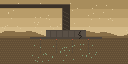
Footing BOpen SVG drawing
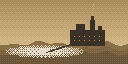
EX-1 plantOpen SVG drawing
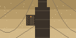
Crane LOpen SVG drawingDesign and History
Spoilers: these sections appear in the game after the first ending.
Design blueprints

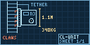
CL-UNITOpen SVG drawing
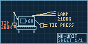
WD-UNITOpen SVG drawing
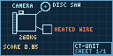
CT-UNITOpen SVG drawing
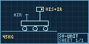
SV-UNITOpen SVG drawing
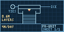
PR-UNITOpen SVG drawing
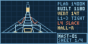
MAST-01Open SVG drawing
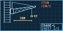
CRANE-LOpen SVG drawing
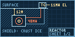
REACTOROpen SVG drawing
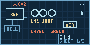
EX-1Open SVG drawing
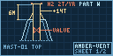
AMBER-VENTOpen SVG drawing
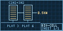
BIO-CELLOpen SVG drawing
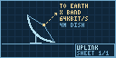
UPLINKOpen SVG drawing
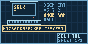
SELK-T01Open SVG drawingArchive pictures

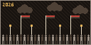
2026, The far right risesOpen SVG drawing
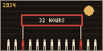
2034, Climate general strikesOpen SVG drawing 2041, Federation of EuropeOpen SVG drawing

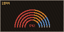
2044, Federal electionOpen SVG drawing 2045, Elected CommissionOpen SVG drawing

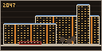
2047, Renovated sídlištěOpen SVG drawing
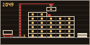
2049, Panel robotsOpen SVG drawing
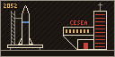
2052, CESEA foundedOpen SVG drawing
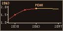
2063, Warming peakOpen SVG drawing
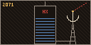
2071, HX HoldingsOpen SVG drawing
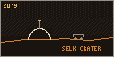
2079, Selk labOpen SVG drawing
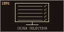
2091, Selection testOpen SVG drawing
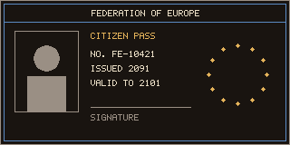
2091, Citizen pass, frontOpen SVG drawing
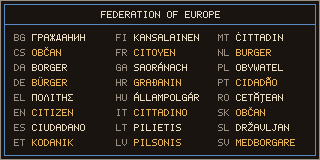
2091, Citizen pass, backOpen SVG drawing
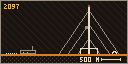
2097, Selk nowOpen SVG drawing